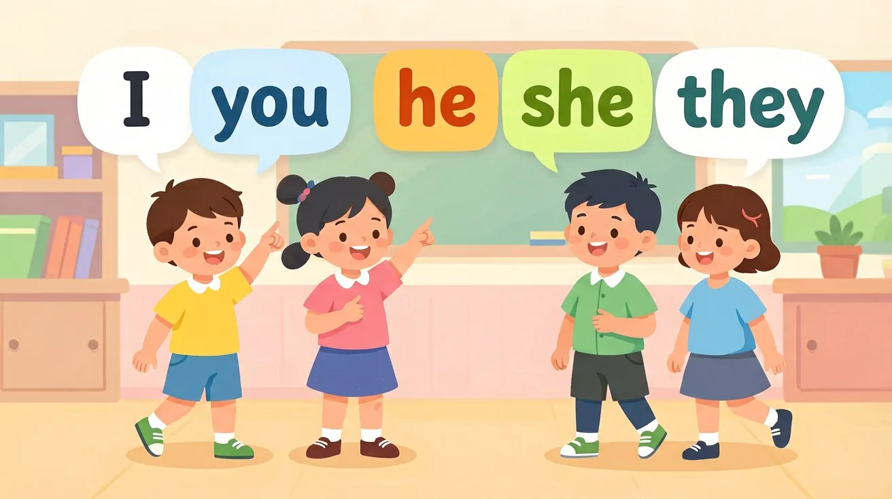

说自己用 I am；说他用 He is；说我们用 We are。My name is … / Her bag is red.
范例：I am a student. She is my friend. They are in Class 3.
常见误区：常见误区是 I is / He are，或 my/I 混用（I name is 错误）。
马上练：辨析要点
He 后面的 be 动词用？
代词与be动词智能匹配机制流程图
📖 我是谁
And：学生知道‘I’表示‘我’
But：不知道‘I’后面要加‘am’
Therefore：学会用‘I am’介绍自己
英语中‘I’代表‘我’，但后面必须加‘am’才完整哦！比如：I am 8 years old（我8岁了）。如果只说‘I 8 years old’就错啦，像少了小尾巴的小狗，不完整！记住：‘I’和‘am’是好朋友，永远手拉手。
🌍 上课点名时，老师问‘Who are you?’，你要大声说：‘I am Lily！’ 就像戴好姓名牌一样，不能只举着空牌子。
🏋️ 即练
哪个句子正确？
📖 他是谁
And：知道‘he/she’指代别人
But：常混淆‘is/am’的用法
Therefore：掌握‘he is/she is’结构
当说到男生要用‘he is’，女生用‘she is’，就像发不同的姓名牌。例如：He is Tom（他是汤姆），She is Lucy（她是露西）。注意！‘he’和‘she’后面跟‘is’，就像冰淇淋必须配小勺子，不能乱用‘am’哦！
🌍 介绍同学时说：‘She is my deskmate. Her book is pink.’ 就像玩拼图，形状要对准才能拼好。
🏋️ 即练
Tom的句子哪句对？
📖 这是啥
And：认识‘this’指近处物品
But：不会接正确be动词
Therefore：学会‘this is’描述物品
‘This’指离你近的东西，后面必须加‘is’，就像望远镜要配镜头。比如：This is my ruler（这是我的尺子）。如果指着书包说‘This are my book’，就像把鞋子戴在头上，全乱套啦！单数物品永远配‘is’。
🌍 展示新铅笔盒时：‘This is my gift！’ 就像魔术师变出兔子要说‘这是...’才完整。
🏋️ 即练
指着一本书该怎么说？
📖 他们是啥
And：知道复数用‘they’
But：总忘记加‘are’
Therefore：掌握‘they are’句型
看到多个东西要用‘they are’，就像发糖要给全班同学。例如：They are my friends（他们是我的朋友）。如果指着三只小猫说‘They is cute’，就像把三根吸管插一个孔里，会洒出来的！记住：复数必须配‘are’。
🌍 课间指着操场同学说：‘They are playing football！’ 就像数小蚂蚁要用放大镜看群体。
🏋️ 即练
哪些铅笔该怎么说？
📖 我是小侦探
And：学生知道用I, you, he等简单代词
But：分不清什么时候用am/is/are
Therefore：帮他们找到代词和be动词的配对规律
今天我们要当语法小侦探！记住：I后面必须带am，比如I am 8 years old；you/we/they后面用are，比如You are happy；he/she/it后面用is，比如She is my teacher。就像穿鞋子要分左右脚，代词和be动词也要配对哦！
🌍 体育课分组时，老师说：'We are team 1! You are team 2!' 看，老师也在用这个规律呢！
🏋️ 即练
选正确的填空：They ___ my friends.
📖 Be动词初探
And：学生已掌握基础人称代词(I/you/he等)
But：不清楚何时用am/is/are
Therefore：建立代词与be动词的对应关系
be动词就像小尾巴，不同主语带不同尾巴：I后面必须用am（I am 8 years old）；单个人/物用is（He is my brother）；多个人/物用are（We are in Class 2）。特殊记忆you永远配are，比如你和朋友说You are happy时，不管指一个人还是多人都用are哦！
🌍 值日生报告时要说：'Tom is on duty today. Lily and I are cleaning the blackboard.' 如果想说'张老师在这里'要说'Ms. Zhang is here'，千万别说成'Ms. Zhang are here'啦！
🏋️ 即练
选正确的be动词：My cat ___ 3 years old.
🗺️ 知识图谱：代词与be动词

人称代词与 be 动词的搭配：我 am、你/他们 are、他/她 is
🔍 深层理解：五镜头
🔧拆开它
把句子拆成'谁'和'是什么'两部分，先找主语再选动词
💡解释它
be动词像小尾巴，跟着主语变形状：I用am, you用are, is跟着他/她/它
⚖️比较它
单数主语像独木桥用is/am，复数主语像队伍用are
👁️看见它
观察值日表上的'Today's helpers: We are...'示范
🚀迁移它
用be动词小口诀给班级宠物写介绍卡
💡 概念检测（互动）
Which shows correct pronoun-be verb pairing?
🔬 值日表语法检查
检查班级英语值日表中所有代词与be动词的搭配
⚠️ 易错点诊所
❌ 把'My friend and I is happy'说成'My friend and I am happy'
✅ 复数主语用are：'My friend and I are happy'
💡 受'I am'影响忽略并列主语
❌ 动物用it指代时错误使用'is'（如：'The dog are cute'）
✅ 单数动物用it+is：'The dog is cute'
💡 对动物代词指代规则不清晰
🧠 记忆锚点
口诀：I用am，you用are，is连着他她它，复数全部都用are
类比：be动词就像衣服尺码，不同身材（主语）要穿不同大小（am/is/are）
📝 真题练习
先独立作答，再点选项查看对错与错因。
选择题 1
Look at the duty list: "____ on duty today." Which is correct?
选择题 2
When Xiao Ming says "____ in Class 4", which is correct?
选择题 3
Which sentence is correct?
填空题 1
Complete the sentence: "____ (I) ____ (be) happy to help you."
查看答案与解析
答案：I am
第一人称单数用I am
填空题 2
Fill in the blanks: "____ (You) ____ (be) good at drawing."